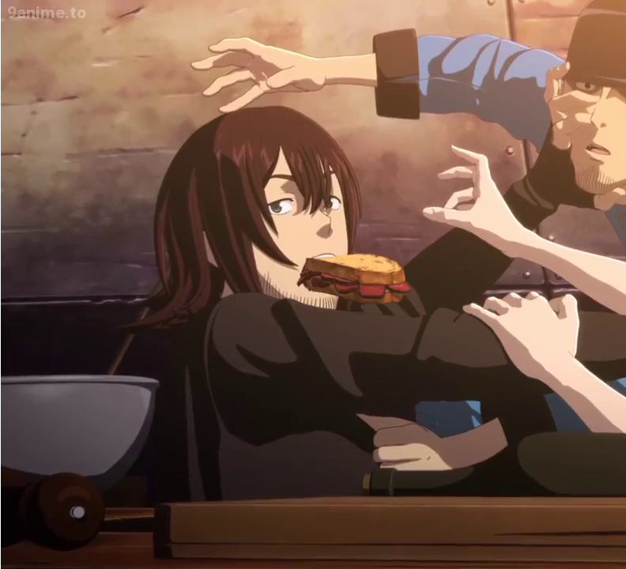

←
Diário de bordo #01:
Diário de bordo #01:
Dia tranquilo na Quin Zaza

O Mika andou roubando comida denovo!
A Takita ficou brava e o restante da tripulação correu atrás dele.
Vanabelle estava observando as nuvens.
Jiro avistou um dragão raro em algumas milhas de distância.